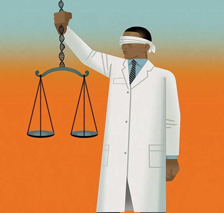

Importance in Health, Environment, Food, and Biotechnology
Health
Beneficial microbes, particularly those in our gut microbiome, play a crucial role in digestion, vitamin synthesis, and immune system regulation. For instance, gut bacteria help break down complex carbohydrates and produce essential vitamins like B12 and K. Disruptions in these microbial communities can lead to health issues, highlighting the importance of maintaining a balanced microbiome.
Environment
Microorganisms are vital for ecological balance. They decompose organic matter, recycling nutrients like carbon and nitrogen back into ecosystems. Certain bacteria also fix atmospheric nitrogen, converting it into forms usable by plants, thus supporting plant growth and soil fertility.
Food
In the food industry, microbes are essential for fermentation processes that produce bread, yogurt, cheese, and alcoholic beverages. They enhance flavor, texture, and nutritional value while also acting as natural preservatives. For example, lactic acid bacteria ferment sugars into lactic acid, which not only preserves food but also imparts a tangy flavor.
Biotechnology
Microbial biotechnology harnesses microorganisms for various applications, including the production of antibiotics, enzymes, and biofuels. Genetically engineered microbes are used to manufacture insulin, human growth hormones, and other therapeutics. Additionally, microbes play a role in environmental cleanup efforts, such as bioremediation of oil spills and waste treatment.
Public Involvement
1. Citizen Science & Public Involvement
Participating in Citizen Science Projects
Environmental Monitoring
App or Device-Based Monitoring
Citizen Science Projects
Engaging in citizen science initiatives allows individuals to contribute directly to microbial research. For instance, the American Gut Project invites participants to submit biological samples, aiding in the mapping of the human microbiome.
The Philippines has been involved in microbiome research initiatives similar to the American Gut Project. Notably, the Microsetta Initiative—an expansion of the American Gut Project—launched its first global pilot in the Philippines in collaboration with the LifeScience Institute. This initiative aims to engage citizen scientists worldwide in microbiome studies, collecting biological samples and lifestyle data to better understand the human microbiome across diverse populations. The Philippine pilot focuses on exploring how lifestyle and health parameters vary due to the country's unique geography and cultural diversity, providing valuable insights for global microbiome research.
Additionally, the Asian Gut Project seeks to sequence human microbiomes across Asia, including the Philippines. This project is part of a broader effort to analyze microbial communities globally, with the goal of understanding how diet, lifestyle, and disease affect the balance of bacteria in the gut.
Environmental Monitoring
The public can help track microbes in water, soil, and air by participating in citizen science projects or community-based environmental studies. These efforts are valuable for:
- Studying antibiotic resistance in local environments
- Monitoring pollution effects on microbial diversity
- Tracking the spread of pathogens or invasive species
- Supporting climate and ecosystem health research
By collecting samples or submitting observations, citizens contribute to data that researchers use to analyze environmental change and microbial impact.
App or Device-Based Monitoring
Smartphones and digital devices are increasingly being used to collect microbial and environmental data. With the help of specialized apps or sensor-equipped devices, individuals can contribute valuable information to scientific databases. These tools can help detect microbial presence, monitor environmental conditions, and even support early detection of health threats.
Examples:
GLOBE Observer App (NASA): People in the Philippines use the GLOBE Observer app to collect environmental data. It helps monitor the atmosphere, land, and mosquito habitats. This supports global research on climate and microbial environments.
Blue CARES Project (UP Diliman): The Blue CARES project trains citizens to monitor marine environments. It includes water quality and microbial testing in coastal areas. Data helps protect ecosystems like coral reefs and seagrass beds.
Bantay Kalikasan – ABS-CBN Foundation: Volunteers in Batangas collect data on coral reefs and mangroves. They use simple tools and devices to record environmental changes. The project supports both conservation and community awareness.
2. Education and Awareness
The public plays a key role in microbial research by spreading awareness and educating others about microbiology, hygiene, and health. According to Timmis et al. (2016), increasing microbial literacy helps people understand the importance of microbes in daily life and encourages responsible behavior regarding antibiotics and hygiene. In the Philippine context, San Juan and Ching (2021) emphasize the need to strengthen science education to improve public understanding of microbiology. Through schools, social media, and community programs, individuals can help foster a more informed and engaged society.
3. Funding and Crowdfunding
Individuals can actively support microbiology research by donating to established institutions or participating in crowdfunding campaigns. According to Oliveira et al. (2016), funding plays a crucial role in advancing scientific studies, including microbiology, by enabling researchers to explore new areas such as microbial resistance and the human microbiome.
Platforms like Experiment.com allow individuals to directly fund microbiology projects, creating an accessible way for the public to contribute to scientific discoveries.
Ethics & Safety Considerations
While public involvement in microbiology is valuable, it must always be guided by ethics and safety. Working with microbes—even at a basic level—requires caution, as some microorganisms can cause disease or environmental harm if mishandled. According to the NIH and other experts, following safety protocols and ethical guidelines is essential to protect individuals, communities, and ecosystems (NIEHS, n.d.; Kim et al., 2018). Researchers emphasize the importance of biosafety training, proper sample handling, and awareness of microbial risks (König, 2022; Lim et al., 2018). Public contributors should always work under professional supervision or use citizen science programs that prioritize safety.
Join Us
You don’t need to be a scientist to help microbiology—join citizen science projects, share facts online, or support research through donations or volunteering. Sites like Zooniverse and CitizenScience.gov offer easy ways to contribute from home and support science that benefits all.
Discoveries Made Through Public Contributions
1. Antibiotics Unearthed: Engaging Students in Soil Microbe Research
The "Antibiotics Unearthed" project, run by the Microbiology Society in the UK, involves students and the public in collecting soil samples to discover new antibiotic-producing microorganisms. Inspired by the Small World Initiative, this program aims to address the decreasing number of effective antibiotics by tapping into the diverse microbial life found in various environments.
2. UPLB Museum of Natural History – Microbial Culture Collection
The University of the Philippines Los Baños (UPLB) houses a Microbial Culture Collection (MCC) comprising over 4,000 strains of bacteria, yeasts, molds, and other microorganisms. This collection has been instrumental in discovering novel thermophilic archaea, such as Caldivirga maquilingensis and Caldisphaera lagunensis, isolated from the hot springs of Mt. Makiling. The MCC is affiliated with the Philippine National Collection of Microorganisms and actively engages in microbial biodiversity research.
3. Student-Discovered Microbial Consortia: Educational Contributions to Microbial Research
At institutions like the University of California, Davis, and the Rochester Institute of Technology, students have participated in projects isolating and sequencing microbes from unique environments, such as salt flats and mushrooms. These educational initiatives have led to the discovery of new microbial species and contributed valuable data to the scientific community.
"To know the world, one must get intimately acquainted with its tiniest inhabitants."
Anton Van Leeuwenhoek
References
- Encyclopædia Britannica. (n.d.). Microbiology. In Encyclopædia Britannica.
- Sarkar, A., & Pal, A. (2022). Importance of microbes in human life. International Journal of Research Publication and Reviews, 3(6), 1435–1439.
- Genetics Science Learning Center. (n.d.). Meet the microbes. Learn.Genetics. University of Utah. Retrieved April 30, 2025.
- Thomas, L. (2023, March 9). Microbes and biotechnology. News-Medical.net. Retrieved April 30, 2025.
- University of California – San Diego. (2019, October 17). American Gut Project launches pilot in the Philippines. Jacobs School of Engineering.
- Asian Scientist Newsroom. (2016, June 17). Mapping the Asian microbiome. Asian Scientist.
- GLOBE Program. (n.d.). Philippines citizen science. GLOBE.gov. Retrieved April 30, 2025.
- Blue CARES Project. (n.d.). Citizen science activities. University of the Philippines Diliman. Retrieved April 30, 2025.
- ABS-CBN Foundation. (n.d.). Environment programs. Retrieved April 30, 2025.
- Timmis, K., Timmis, J. K., Brüssow, H., Fernández, L. A., Ramos, J. L., & Pühler, A. (2016). The urgent need for microbiology literacy in society. Environmental Microbiology, 18(5), 1405–1412.
- San Juan, J. A., & Ching, G. S. (2021). Science education in the Philippines: Challenges and prospects for development. Frontiers in Education, 6, Article 735297.
- Oliveira, L., Lima, L. M., & Ferreira, P. S. (2016). The role of crowdfunding in scientific research funding: Opportunities and challenges. Frontiers in Psychology, 7, 847.
- Microbiology resource of the Month: Student-discovered Microbial Consortia. ASM.org. (n.d.).
- Roberts, A. P. (2020). Swab and Send: a Citizen science, Antibiotic Discovery Project. Future Science OA, 6(6).